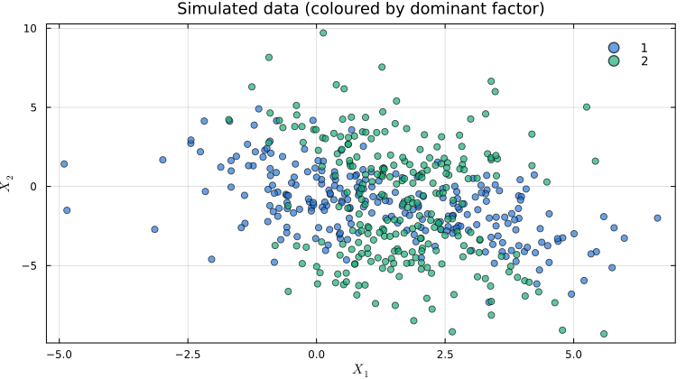
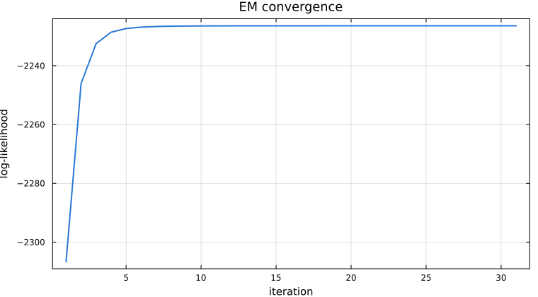
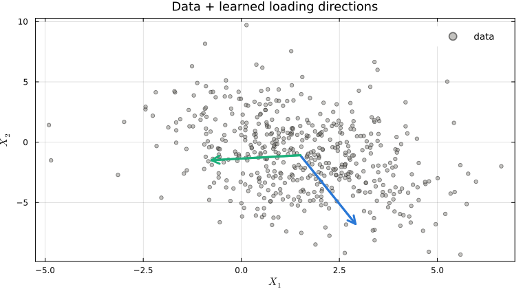
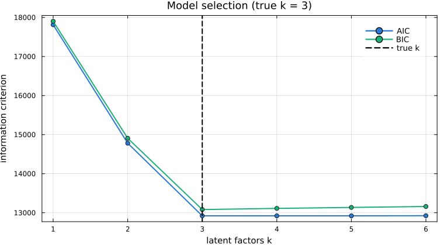

Probabilistic PCA
Probabilistic PCA is the latent-variable generative version of classical PCA: observations $x \in \mathbb{R}^D$ are an isotropic-noise projection of a $k$-dimensional latent factor $z$. As $\sigma^2 \to 0$ it reduces to standard PCA.
using StateSpaceDynamics
using LinearAlgebra
using Random
using Plots
using StatsPlots
using StableRNGs
using Distributions
using LaTeXStrings
using Statistics
rng = StableRNG(12345);Model
\[z \sim \mathcal{N}(0, I_k), \qquad x \mid z \sim \mathcal{N}(\mu + W z, \sigma^2 I_D).\]
Marginally $x \sim \mathcal{N}(\mu, WW^\top + \sigma^2 I)$. The loading matrix $W \in \mathbb{R}^{D \times k}$ is identifiable only up to an orthogonal rotation of the columns.
D = 2
k = 2
W_true = [-1.64 0.2;
0.9 -2.8]
σ²_true = 0.5
μ_true = [1.65, -1.3]
ppca = ProbabilisticPCA(W_true, σ²_true, μ_true)Probabilistic PCA Model:
------------------------
size(W) = (2, 2)
size(z) = (2, 0)
σ² = 0.5
μ = [1.65, -1.3]
Simulation
num_obs = 500
X, z = rand(rng, ppca, num_obs);
p_data = let
labels = [abs(z[1, i]) > abs(z[2, i]) ? 1 : 2 for i in axes(z, 2)]
scatter(X[1, :], X[2, :];
group=labels, xlabel=L"X_1", ylabel=L"X_2",
title="Simulated data (coloured by dominant factor)",
markersize=4, alpha=0.7,
palette=["#2a78d6", "#1baf7a"], legend=:topright)
end
Learning
fit! runs EM and returns the marginal log-likelihood trajectory, which must be non-decreasing.
W_init = randn(rng, D, k)
σ²_init = 0.5
μ_init = randn(rng, D)
fit_ppca = ProbabilisticPCA(W_init, σ²_init, μ_init)
lls = fit!(fit_ppca, X);
p_ll = plot(lls;
xlabel="iteration", ylabel="log-likelihood",
title="EM convergence", lw=2, legend=false, color="#2a78d6")
Posterior and reconstruction
The posterior $p(z \mid x)$ is Gaussian with precision $M = I_k + W^\top W / \sigma^2$.
function ppca_posterior_means(W, σ², μ, X)
k = size(W, 2)
M = I(k) + (W' * W) / σ²
B = M \ (W' / σ²)
return B * (X .- μ)
end
Ẑ = ppca_posterior_means(fit_ppca.W, fit_ppca.σ², fit_ppca.μ, X)
X̂ = fit_ppca.μ .+ fit_ppca.W * Ẑ
recon_mse = mean(sum(abs2, X - X̂; dims=1)) / D
p_loadings = let
w1, w2 = fit_ppca.W[:, 1], fit_ppca.W[:, 2]
p = scatter(X[1, :], X[2, :];
xlabel=L"X_1", ylabel=L"X_2", label="data",
alpha=0.5, markersize=3, color="#898781",
title="Data + learned loading directions")
scale = 2.0
quiver!(p, [fit_ppca.μ[1]], [fit_ppca.μ[2]];
quiver=([scale * w1[1]], [scale * w1[2]]),
arrow=:arrow, lw=3, color="#2a78d6", label=L"W_1")
quiver!(p, [fit_ppca.μ[1]], [fit_ppca.μ[2]];
quiver=([scale * w2[1]], [scale * w2[2]]),
arrow=:arrow, lw=3, color="#1baf7a", label=L"W_2")
end
Choosing the latent dimension
The 2-D example above is convenient for visualisation but does no actual dimensionality reduction ($k = D$). To make model selection meaningful we switch to a higher-dimensional dataset: $D = 10$ observed channels driven by $k_\text{true} = 3$ latent factors. For each candidate $k$ we refit and compare via AIC / BIC; the minimum-BIC choice is what we'd typically report.
D_hd = 10
k_true_hd = 3
W_hd = randn(rng, D_hd, k_true_hd)
σ²_hd = 0.3
μ_hd = randn(rng, D_hd)
ppca_hd = ProbabilisticPCA(W_hd, σ²_hd, μ_hd)
X_hd, _ = rand(rng, ppca_hd, num_obs);Because $W$ is only identified up to a rotation of its columns, the effective number of free parameters is $Dk + D + 1 - k(k-1)/2$ (the rotational redundancy is subtracted).
function aic_bic(ll, n_params, n_obs)
return (2 * n_params - 2 * ll, n_params * log(n_obs) - 2 * ll)
end
k_range = 1:6
aic_scores = Float64[]
bic_scores = Float64[]
lls_final = Float64[]
for k_test in k_range
p = ProbabilisticPCA(randn(rng, D_hd, k_test), 0.5, zeros(D_hd))
ll_traj = fit!(p, X_hd)
n_params = D_hd * k_test + D_hd + 1 - (k_test * (k_test - 1)) ÷ 2
aic, bic = aic_bic(ll_traj[end], n_params, num_obs)
push!(aic_scores, aic)
push!(bic_scores, bic)
push!(lls_final, ll_traj[end])
end
optimal_k = k_range[argmin(bic_scores)]
println("True k=$(k_true_hd), selected k=$(optimal_k)")
p_select = plot(k_range, [aic_scores bic_scores];
xlabel="latent factors k", ylabel="information criterion",
title="Model selection (true k = $k_true_hd)",
label=["AIC" "BIC"], marker=:circle, lw=2)
vline!(p_select, [k_true_hd]; linestyle=:dash, color=:black, lw=2,
label="true k")
This page was generated using Literate.jl.